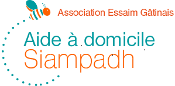

Aide au lever et au coucher
Accompagnement sécurisant au quotidien.

Association Essaim Gâtinais · SIAMPADH
Un service humain, local et personnalisé pour favoriser le maintien à domicile des personnes âgées, des personnes en situation de handicap et des personnes fragilisées.
Nos services
Nous accompagnons les bénéficiaires dans les actes de la vie quotidienne, le maintien de l’autonomie et le lien social.
Accompagnement sécurisant au quotidien.
Respect de la dignité, de l’intimité et des habitudes de vie.
Soutien autour du repas selon les besoins.
Travaux ménagers, linge et repassage.
Courses, rendez-vous, promenades et sorties.
Présence, écoute, activités, mémoire et stimulation.
Prestations ponctuelles ou programmées.
Livraison de repas à domicile 7 jours sur 7.
Notre équipe
Intervenantes à domicile, bureau, direction, responsable de secteur et président : une équipe organisée autour du maintien à domicile.
Actualités
Retrouvez ici les événements, informations et moments importants de l’association. Les actualités sont visibles par tous.
Livret d’accueil
Le livret présente le SIAMPADH, son fonctionnement, ses prestations, ses engagements et les informations utiles pour les bénéficiaires et leurs familles.
Astuce : cliquez sur « Écouter » pour lancer la lecture audio du livret avec la voix de votre navigateur.
Contact
Le formulaire ouvre automatiquement votre messagerie avec le message prêt à envoyer.
📍 41-43, Avenue de Fontainebleau
77760 La Chapelle-La-Reine
📱 Astreinte : 06.60.42.16.55
✉️ siampadh77@essaimgatinais.asso.fr
🕘 Du lundi au vendredi : 9h-13h / 14h-17h